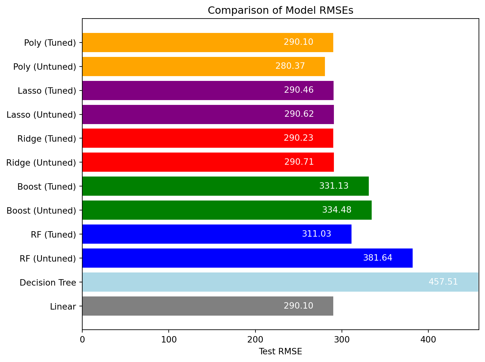

from palmerpenguins import penguins
from pandas import get_dummies
import duckdb
import numpy as np
from sklearn import linear_model
from sklearn import preprocessing
from sklearn.model_selection import train_test_split, GridSearchCV
from sklearn.linear_model import LinearRegression, Ridge, Lasso
from sklearn.tree import DecisionTreeRegressor
from sklearn.ensemble import RandomForestRegressor, GradientBoostingRegressor
from sklearn.metrics import mean_squared_error, make_scorer
from sklearn.preprocessing import PolynomialFeatures, StandardScaler
from sklearn.pipeline import Pipeline
import matplotlib.pyplot as pltModel
Import Packages
Get Data
#con = duckdb.connect('my-db.duckdb')
#df = penguins.load_penguins()
#con.execute('CREATE TABLE penguins AS SELECT * FROM df')
#con.close()con = duckdb.connect('my-db.duckdb')
df = con.execute("SELECT * FROM penguins").fetchdf().dropna()Establish Predictors and train/test split
The parameters for the model are bill_length_mm, species, and sex, with the model trying to predict the body_mass_g, or mass in grams for the penguin based on the parameters.
X = get_dummies(df[['bill_length_mm', 'species', 'sex']], drop_first = True)
y = df['body_mass_g']
X_train, X_test, y_train, y_test = train_test_split(X, y, test_size=0.2, random_state=1)Models Overview
To best predict the mass in grams of penguins using the Palmer’s Penguins Dataset, the following regression methods are used:
Multiple Linear Regression
Regression Tree
Random Forest
Boosting
Ridge Regression
Lasso Regression
Polynomial Regression
Model performance will be compared using RMSE and the regression methods are performed using tools from the sklearn package.
Additionally, to determine the best performance for Random Forest, Boosting, Ridge Regression, Lasso Regression, and Polynomial Regression, hyperparameter tuning will be performed and compared to the base model. Tuning will be performed using the grid search method from sklearn’s GridSearchCV. Below is the function used for scoring parameters for tuning based on RMSE values.
def rmse(y_true, y_pred):
return np.sqrt(mean_squared_error(y_true, y_pred))
rmse_scorer = make_scorer(rmse, greater_is_better=False)
# Negative because GridSearchCV seeks to maximize the scoreThis function combined with the grid search setups tune the hyperparameters to maximize the negative RMSE- which in practices attempts to find the minimum RMSE.
Linear Regression
linear_model = LinearRegression()
linear_model.fit(X_train, y_train)
y_pred_linear = linear_model.predict(X_test)
linear_rmse = np.sqrt(mean_squared_error(y_test, y_pred_linear))
print(f"Linear Regression RMSE: {linear_rmse}")Linear Regression RMSE: 290.09581312213606The RMSE is calculated to be 290.096, which will be used to compare against the subsequent models.
Decision Tree
tree_model = DecisionTreeRegressor(random_state=1)
tree_model.fit(X_train, y_train)
y_pred_tree = tree_model.predict(X_test)
decision_tree_rmse = np.sqrt(mean_squared_error(y_test, y_pred_tree))
print(f"Decision Tree RMSE: {decision_tree_rmse}")Decision Tree RMSE: 457.5074988737395The calculated RMSE for this of 457.507 is significantly higher than that of the Linear Regression model, implying that it is a less accurate model overall.
Random Forest
First, we will look at the un-tuned model seen below.
forest_model = RandomForestRegressor(random_state=1)
forest_model.fit(X_train, y_train)
y_pred_forest = forest_model.predict(X_test)
rf_untuned_rmse = np.sqrt(mean_squared_error(y_test, y_pred_forest))
print(f"Random Forest RMSE: {rf_untuned_rmse}")Random Forest RMSE: 381.64031610614956The RMSE was calculated to be 381.634, which is an improvement over the single decision tree but falls short of Linear Regression.
Now, we will use hyperparameter tuning to determine the best parameters to minimize RMSE and the calculated RMSE value using those parameters.
# Setup the parameter grid
param_grid_rf = {
'n_estimators': [100, 200],
'max_features': ['sqrt', 'log2'],
'max_depth': [None, 10, 20],
'min_samples_split': [2, 5],
'min_samples_leaf': [1, 2, 4]
}
# Grid Search to find the best parameters
grid_rf = GridSearchCV(estimator=RandomForestRegressor(random_state=1),
param_grid=param_grid_rf,
scoring=rmse_scorer,
cv=10,
verbose=1)
grid_rf.fit(X_train, y_train)
# Evaluate on test data
y_pred_rf = grid_rf.predict(X_test)
rf_tuned_rmse = np.sqrt(mean_squared_error(y_test, y_pred_rf))
print(f"Best parameters for Random Forest: {grid_rf.best_params_}")
print(f"Test RMSE for Random Forest: {rf_tuned_rmse}")Fitting 10 folds for each of 72 candidates, totalling 720 fits
Best parameters for Random Forest: {'max_depth': None, 'max_features': 'sqrt', 'min_samples_leaf': 4, 'min_samples_split': 2, 'n_estimators': 200}
Test RMSE for Random Forest: 311.0271134033527From tuning the model, the test RMSE was reduced to 311.027, which is still significantly higher than that of the Linear Regression model.
Boosting
Once again, we will be looking at the un-tuned Boosting model as a baseline.
boosting_model = GradientBoostingRegressor(random_state=1)
boosting_model.fit(X_train, y_train)
y_pred_boosting = boosting_model.predict(X_test)
boost_untuned_rmse = np.sqrt(mean_squared_error(y_test, y_pred_boosting))
print(f"Boosting RMSE: {boost_untuned_rmse}")Boosting RMSE: 334.4818790948876This gives an RMSE of 334.482, which is an improvement over the un-tuned Random Forest RMSE.
Similarly to Random Forest, tuning will be performed to see if model performance increases.
# Setup the parameter grid
param_grid_gb = {
'n_estimators': [100, 200],
'learning_rate': [0.01, 0.1, 0.2],
'subsample': [0.8, 1.0],
'max_depth': [3, 4, 5]
}
# Grid Search to find the best parameters
grid_gb = GridSearchCV(estimator=GradientBoostingRegressor(random_state=1),
param_grid=param_grid_gb,
scoring=rmse_scorer,
cv=10,
verbose=1)
grid_gb.fit(X_train, y_train)
# Evaluate on test data
y_pred_gb = grid_gb.predict(X_test)
boost_tuned_rmse = np.sqrt(mean_squared_error(y_test, y_pred_gb))
print(f"Best parameters for Gradient Boosting: {grid_gb.best_params_}")
print(f"Test RMSE for Gradient Boosting: {boost_tuned_rmse}")Fitting 10 folds for each of 36 candidates, totalling 360 fits
Best parameters for Gradient Boosting: {'learning_rate': 0.1, 'max_depth': 3, 'n_estimators': 100, 'subsample': 0.8}
Test RMSE for Gradient Boosting: 331.12675171300873This gives a tuned test RMSE of 331.127, which is an improvement over the un-tuned model, but still falls well short of that of the linear regression model.
Ridge Regression
The un-tuned Ridge Regression model is depicted below.
ridge_model = Ridge(random_state=1)
ridge_model.fit(X_train, y_train)
y_pred_ridge = ridge_model.predict(X_test)
ridge_untuned_rmse = np.sqrt(mean_squared_error(y_test, y_pred_ridge))
print(f"Ridge Regression RMSE: {ridge_untuned_rmse}")Ridge Regression RMSE: 290.7129581931783The RMSE for this model is 290.713, which is only slightly higher than that of Linear Regression, which makes sense considering both are built using least squares. Let’s check if the tuned model improves this.
# Define the pipeline
ridge_pipeline = Pipeline([
('scaler', StandardScaler()),
('ridge', Ridge())
])
# Setup the parameter grid
param_grid_ridge = {
'ridge__alpha': [0.01, 0.1, 1, 10, 100]
}
# Grid Search to find the best parameters
grid_ridge = GridSearchCV(ridge_pipeline, param_grid_ridge, cv=10, scoring=rmse_scorer, verbose=1)
grid_ridge.fit(X_train, y_train)
# Evaluate on test data
y_pred_ridge = grid_ridge.predict(X_test)
ridge_tuned_rmse = np.sqrt(mean_squared_error(y_test, y_pred_ridge))
print(f"Best parameters for Ridge: {grid_ridge.best_params_}")
print(f"Test RMSE for Ridge: {ridge_tuned_rmse}")Fitting 10 folds for each of 5 candidates, totalling 50 fits
Best parameters for Ridge: {'ridge__alpha': 1}
Test RMSE for Ridge: 290.2326493952725The test RMSE of 290.233 was marginally better than that of the un-tuned model and still slightly worse than Linear Regression but with additionally model complexity.
Lasso Regression
The un-tuned Lasso model is shown below.
lasso_model = Lasso(random_state=1)
lasso_model.fit(X_train, y_train)
y_pred_lasso = lasso_model.predict(X_test)
lasso_untuned_rmse = np.sqrt(mean_squared_error(y_test, y_pred_lasso))
print(f"Lasso Regression RMSE: {lasso_untuned_rmse}")Lasso Regression RMSE: 290.62380428183945The Lasso model performs similarly to the Ridge Regression mode, as to be expected in this scenario. The RMSE is 290.624. Tuning is conducted in the cell below.
# Define the pipeline
lasso_pipeline = Pipeline([
('scaler', StandardScaler()),
('lasso', Lasso(max_iter=10000))
])
# Setup the parameter grid
param_grid_lasso = {
'lasso__alpha': [0.01, 0.1, 1, 10, 100]
}
# Grid Search to find the best parameters
grid_lasso = GridSearchCV(lasso_pipeline, param_grid_lasso, cv=10, scoring=rmse_scorer, verbose=1)
grid_lasso.fit(X_train, y_train)
# Evaluate on test data
y_pred_lasso = grid_lasso.predict(X_test)
lasso_tuned_rmse = np.sqrt(mean_squared_error(y_test, y_pred_lasso))
print(f"Best parameters for Lasso: {grid_lasso.best_params_}")
print(f"Test RMSE for Lasso: {lasso_tuned_rmse}")Fitting 10 folds for each of 5 candidates, totalling 50 fits
Best parameters for Lasso: {'lasso__alpha': 1}
Test RMSE for Lasso: 290.4642234879255Tuning the Lasso Regression model has little effect on the test RMSE, decreasing slightly to 290.464, which is still slightly higher than that of Linear Regression.
Polynomial Regression
Now, we will perform un-tuned polynomial regression using degree 2 as a baseline.
# Create a pipeline that includes polynomial feature creation, scaling, and Linear Regression
poly_untuned_pipeline = Pipeline([
('poly', PolynomialFeatures(degree=2)), # Generates polynomial and interaction features up to the second degree
('scaler', StandardScaler()), # Standardizes the features
('linear', LinearRegression()) # Applies Linear Regression
])
# Fit the pipeline on the training data
poly_untuned_pipeline.fit(X_train, y_train)
# Use the trained pipeline to make predictions on the test set
y_pred = poly_untuned_pipeline.predict(X_test)
# Calculate the Root Mean Squared Error (RMSE) for the predictions
poly_untuned_rmse = np.sqrt(mean_squared_error(y_test, y_pred))
print(f"RMSE: {poly_untuned_rmse}")RMSE: 280.3679077361095The test RMSE of 279.156 is the first improvement on the original Linear Regression test RMSE. Tuning of the Polynomial Model is shown below.
# Define a pipeline that includes polynomial feature creation, scaling, and Linear Regression
pipeline = Pipeline([
('poly', PolynomialFeatures()),
('scaler', StandardScaler()),
('linear', LinearRegression())
])
# Define the parameter grid to tune the polynomial degrees
param_grid = {
'poly__degree': [1, 2, 3, 4, 5, 6, 7, 8] # Testing polynomial degrees from 1 to 5
}
# Create a GridSearchCV object to tune the degrees
grid_search = GridSearchCV(pipeline, param_grid, cv=10, scoring='neg_root_mean_squared_error', verbose=1)
# Fit the GridSearchCV object to the training data
grid_search.fit(X_train, y_train)
# Finding the best polynomial degree and corresponding model
best_degree = grid_search.best_params_['poly__degree']
best_model = grid_search.best_estimator_
# Use the best model to make predictions on the test set
y_pred = best_model.predict(X_test)
# Calculate the Root Mean Squared Error (RMSE) for the predictions on the test set
poly_tuned_rmse = np.sqrt(mean_squared_error(y_test, y_pred))
print(f"Best polynomial degree: {best_degree}")
print(f"Test RMSE: {poly_tuned_rmse}")Fitting 10 folds for each of 8 candidates, totalling 80 fits
Best polynomial degree: 1
Test RMSE: 290.0958131221363The tuned model here performs worse than the un-tuned model, and almost exactly the same as the first Linear Regression model with a test RMSE of 290.096.
Model Comparison and Selection
The test RMSE for each model is seen in the graph below.
#Setup list of calculated rmse from each model
rmse_values = [linear_rmse, decision_tree_rmse,rf_untuned_rmse,rf_tuned_rmse,boost_untuned_rmse, boost_tuned_rmse, ridge_untuned_rmse, ridge_tuned_rmse, lasso_untuned_rmse, lasso_tuned_rmse, poly_untuned_rmse, poly_tuned_rmse]
# Corresponding model names
models = [
'Linear',
'Decision Tree',
'RF (Untuned)',
'RF (Tuned)',
'Boost (Untuned)',
'Boost (Tuned)',
'Ridge (Untuned)',
'Ridge (Tuned)',
'Lasso (Untuned)',
'Lasso (Tuned)',
'Poly (Untuned)',
'Poly (Tuned)'
]
# Color mapping by model type
colors = [
'gray', # Linear
'lightblue', # Decision Tree
'blue', 'blue', # RF (Untuned, Tuned)
'green', 'green', # Boost (Untuned, Tuned)
'red', 'red', # Ridge (Untuned, Tuned)
'purple', 'purple', # Lasso (Untuned, Tuned)
'orange', 'orange' # Poly (Untuned, Tuned)
]
# Creating the horizontal bar chart
plt.figure(figsize=(8, 6)) # Adjust figure size for better display
bars = plt.barh(models, rmse_values, color=colors) # Create a horizontal bar chart with colored bars
plt.xlabel('Test RMSE') # Label on X-axis
plt.title('Comparison of Model RMSEs') # Title of the plot
plt.xlim([0, max(rmse_values) + 1]) # Set the limit for X-axis to accommodate labels
# Adding text labels on the bars
for bar in bars:
label_position = bar.get_width() - 0.05 * max(rmse_values) # Adjust label position to the left of the bar's end if necessary
plt.text(label_position, bar.get_y() + bar.get_height()/2,
f'{bar.get_width():.2f}', # Format the RMSE value to 2 decimal places
va='center', ha='right', color='white') # Horizontal align right, change text color for visibility
plt.tight_layout() # Adjust layout to make room for label
plt.show() # Display the plot
From this, we can see that the best model is the un-tuned Polynomial Regression Model, which will be used below for Vetiver model pinning.
Vetiver Model and Pinning
from vetiver import VetiverModel
v = VetiverModel(poly_untuned_pipeline, model_name='penguin_model', prototype_data=X)from vetiver import VetiverAPI
app = VetiverAPI(v, check_prototype=True)import pins
from vetiver import vetiver_pin_write
board = pins.board_folder("data/model", allow_pickle_read = True)
vetiver_pin_write(board, v)
#board.pin_write(model, "penguin_model", type = "joblib")Model Cards provide a framework for transparent, responsible reporting.
Use the vetiver `.qmd` Quarto template as a place to start,
with vetiver.model_card()
Writing pin:
Name: 'penguin_model'
Version: 20240421T022623Z-3822bRunning the Site
#app.run(port = 8080)#import requests
#req_data = {
# "bill_length_mm": 0,
# "species_Chinstrap": False,
# "species_Gentoo": False,
# "sex_male": False
#}#req = requests.post('http://127.0.0.1:8080/handler_predict', json = [req_data], timeout = 10)
#res = req.json().get('predict')[0]Close Database
con.close()